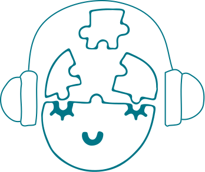

Afleveringen
Welkom op de pagina met het overzicht van al onze afleveringen!
Listen now to improve your body and mind

Voeding
In deze aflevering leggen wij uit waarom voeding belangrijk is voor je welzijn. We bespreken hoe wat je eet invloed heeft op je mentale en fysieke gezondheid. Ontdek hoe voedingsstoffen zoals vitamines en eiwitten je energieniveau, humeur en slaap kunnen beïnvloeden. We kijken ook naar de gevolgen van ongezonde eetgewoonten en hoe deze kunnen bijdragen aan stress en angst. Daarnaast delen we praktische tips en makkelijke recepten die je helpen gezondere keuzes te maken zonder dat je iets hoeft op te geven aan smaak. Of je nu al veel weet over voeding of net begint, deze aflevering biedt je handige inzichten om voeding in te zetten als een krachtig hulpmiddel voor jouw gezondheid
Zzz... slaap
In deze aflevering leggen wij uit wat slaap te maken heeft met je mentale en fysieke welzijn. We verkennen de verschillende fasen van de slaap en hoe een goede nachtrust bijdraagt aan je algehele gezondheid. Luister naar praktische tips voor een betere slaapkwaliteit en ontdek waarom slaap essentieel is voor je welzijn. Een goede nachtrust heeft een directe impact op je humeur, concentratie en zelfs je immuunsysteem. We leggen uit hoe onvoldoende of verstoorde slaap kan leiden tot een verhoogd stressniveau, angstgevoelens en een afname van je algehele gezondheid. Daarnaast delen we praktische tips en technieken om je slaapkwaliteit te verbeteren, zoals het creëren van een rustgevende slaapomgeving en het ontwikkelen van een consistent slaapschema. Luister mee en ontdek waarom slaap niet alleen een luxe is, maar een essentiële behoefte voor je welzijn en hoe het invloed heeft op je dagelijkse leven.
Sport
In deze aflevering zullen wij uitleggen wat sport te maken heeft met het verwerken van prikkels en waarom het goed is voor je lichaam. We bespreken de voordelen van verschillende soorten sporten, zowel individueel als in groepsverband, en hoe beweging kan helpen bij stressvermindering en zelfzorg. Daarnaast bespreken we hoe regelmatige lichaamsbeweging niet alleen helpt om stress te verminderen, maar ook een positieve invloed heeft op je mentale gezondheid. We delen persoonlijke ervaringen en tips over hoe je sport kunt toevoegen in je dagelijkse routine en hoe je de juiste activiteit voor jezelf kunt vinden. Deze aflevering biedt inzichten en inspiratie om de voordelen van beweging te omarmen als een essentieel onderdeel van zelfzorg.
Prikkels
In deze aflevering leggen wij uit wat prikkels zijn en hoe ze ons dagelijks leven beïnvloeden. We bespreken de verschillende soorten prikkels, zoals geluid, licht en sociale situaties, en hoe deze onze emoties en reacties kunnen beïnvloeden.
Mentale & fysieke gezondheid
In deze aflevering leggen wij uit wat het verband is tussen mentale en fysieke gezondheid. We bespreken hoe je geestelijke gezondheid invloed heeft op je lichaam en andersom. Ontdek hoe stress, voeding en beweging elkaar kunnen beïnvloeden en wat je kunt doen om in balans te blijven.
Neurodiversiteit
In deze aflevering praten wij over wat neurodivergentie is. We leggen uit wat het betekent om neurodivergent te zijn en hoe dit zich kan uiten in het dagelijks leven. Ontdek de verschillende vormen van neurodivergentie, zoals ADHD, autisme en dyslexie, en wat deze kunnen betekenen voor jou of iemand in je omgeving.